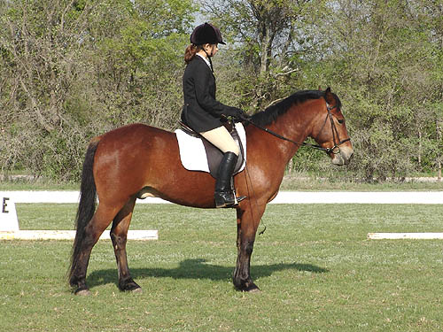
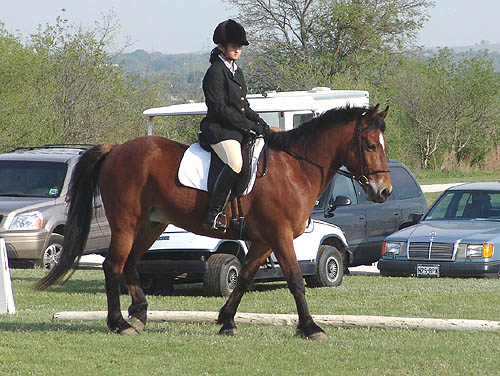
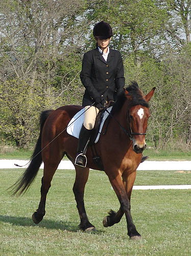
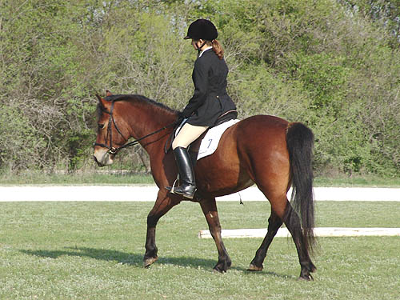
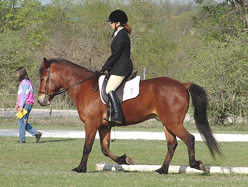
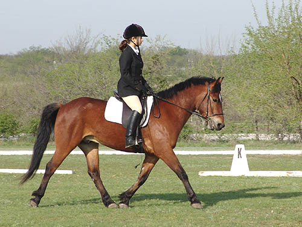

Herbie Showing in
Dressage First, here are the pictures of Lydia
riding in Intro 1
on Herbie. They placed 3rd out of 7 entries.
A
very respectable showing for their first
dressage ride
together and his first time in the ring.
(click here for my pictures
on Herbie)

All of his halts were pretty
acceptable. No tossing of the head, and just a little ahead of the mark
most times.

The ring was beside the parking
lot and the road into the farm. A lot of things to distract, but Herbie
stayed focused.

Lydia had only ridden Herbie
once for about 5 minutes at a cross country school a couple of weeks ago.
Still, they had no trouble putting in a lovely test.

The judge commented on how nicely
they were turned out.

They were in the new Ortho-Flex
saddle that seems to fit Herbie well.

The occassional mouthing of
the bit. He seems to do it most when he's nervous or unsure. I think it'll
go away, but I might try a flash for a week to encourage him to stop.